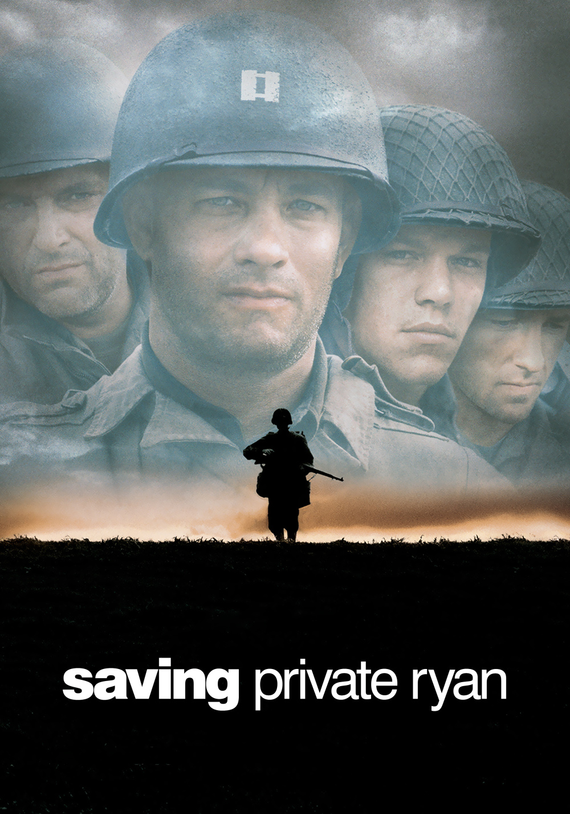

Saving Private Ryan (1998)
Regisseur: Steven Spielberg
Duur: 169 minuten
Verhaal
{kind=link}
De film begint met de landing in Normandië op D-Day 6 juni 1944. Kapitein Miller (gespeeld door Tom Hanks) moet het hoofd bieden aan de Duitse vestingen op het strand. Na een bloederig gevecht is er een zekere Ryan omgekomen. Terwijl het ministerie van Oorlog de brieven aan het schrijven is, komt men erachter dat er nog twee broers van deze Ryan zijn omgekomen. Aangezien het broers van elkaar zijn, treedt de speciale regeling in werking dat de laatst overlevende broer, James Ryan (gespeeld door Matt Damon), naar huis mag. Het probleem is dat James Ryan bij de paratroopers van de 101st Airborne Division ergens in Frankrijk is gedropt. Kapitein Miller krijgt de opdracht om soldaat Ryan op te sporen. Onderweg krijgen ze steeds meer de waanzin en gruwelijkheden van oorlog te zien en beginnen ze te twijfelen waarom het leger een groep mensen op pad stuurt om één soldaat te redden.
Cast
| Acteur | Rol |
|---|---|
| Tom Hanks | Captain John Miller |
| Matt Damon | Private James Ryan |
| Tom Sizemore | Sergeant Mike Horvath |
| Barry Pepper | Private Daniel Jackson |
| Jeremy Davies | Corporaal Timothy P. Upham |
| Adam Goldberg | Private Stanley Mellish |
| Edward Burns | Eerste klas Private Richard Reiben |
| Vin Diesel | Private Adrian Caparzo |
| Giovanni Ribisi | Hospik Irwin Wade |